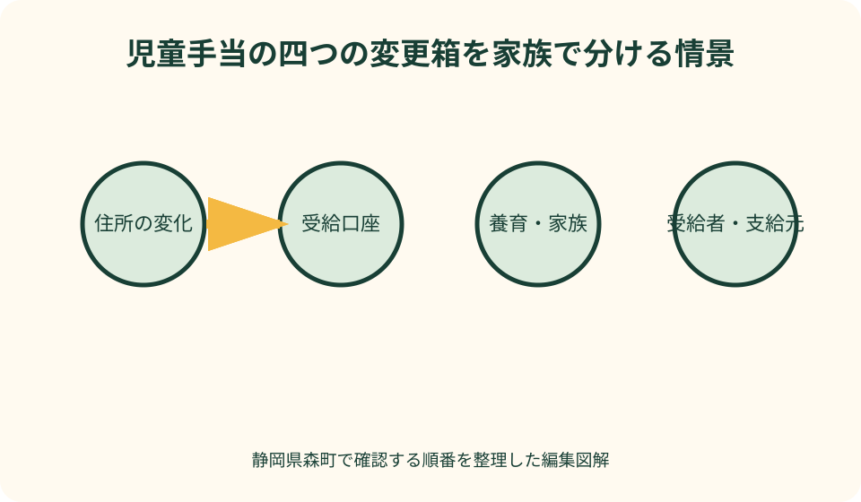
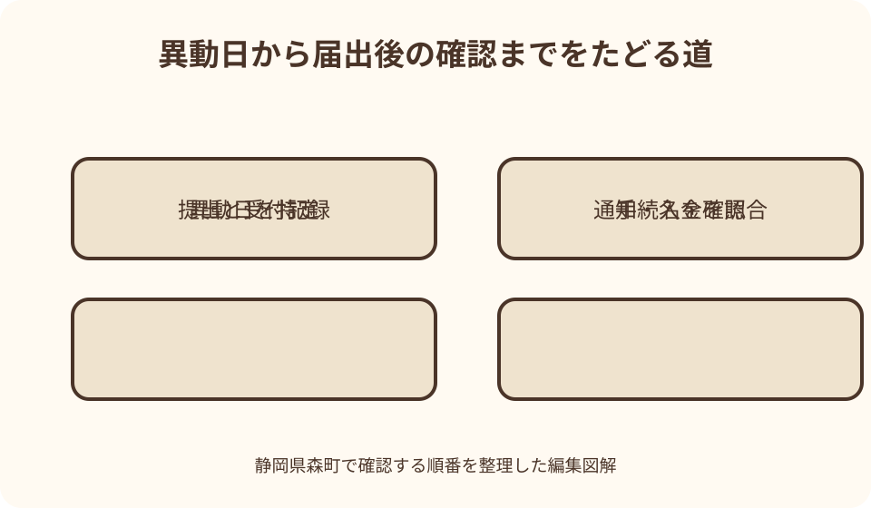

妊娠・子育て手続｜最終確認 2026-08-10
静岡県森町の児童手当変更届｜住所・口座・家族状況・受給者を分けて確認
児童手当の受給中に何かが変わったとき、変更届を一種類の書類だと思うと迷います。森町内の転居、町外転出、受給口座の差替え、子どもの出生や別居、配偶者の増減、公務員への就職などでは、確認する日付も手続名も異なるからです。この記事では、変更が起きた事実を四つの箱に分け、森町健康こども課こども家庭係へ伝える内容を整えます。
変更届の結論は四つの箱に分ける
児童手当の変更を整理するときは、住所、振込口座、養育する子どもや配偶者の状況、受給者本人の資格という四つの箱を作ります。同じ日に複数の変化があっても、箱ごとに必要な届出を確認すれば、住所だけ直して口座や養育状況を伝え忘れる事態を防げます。
森町公式は、引っ越しや出生など家族に変化があった場合は15日以内に申請するよう案内しています。ただし、すべての変更が同じ15日という意味ではありません。出生や他市区町村への転入の認定請求、町外転出、公務員への身分変更、単なる町内転居では手続の性質が違うため、異動日から日数を数えつつ担当へ手続名を確認します。
変更の起点は、役所へ行ける日ではなく、子どもの出生、住所異動、別居開始、養育者の変更、公務員採用などの事実が生じた日です。日付が曖昧なら、住民異動届、出生届、雇用通知、施設入所日など手元の資料で確認し、推測の日を申請書へ書かないようにします。
この記事は2026年8月10日に森町と国の公式案内を確認して作成しています。児童手当は個々の住民記録、養育、生計、勤務先により扱いが変わります。自分の家庭が届出対象外だと記事だけで決めず、変更前後の事実を森町健康こども課こども家庭係へ伝えてください。
最初に受給情報の現在地を確認する
変更前の受給者名、対象児童、住所、振込先、支給元を一枚に書きます。通帳の入金名義、森町から届いた通知、直近に提出した書類の控えを照合すると、家族の記憶だけに頼らず現在地を特定できます。通知が見つからない場合は、再発行を当然視せず、本人確認のうえ何を教えてもらえるか担当へ尋ねます。
児童手当と児童扶養手当、町独自の一時的な給付は別制度です。振込名だけで制度を取り違えると、異なる届出書を探してしまいます。今回変えたいのが継続的な児童手当の登録なのか、別の給付の口座なのかを通知の名称で確認します。
父母のどちらが受給者かも明記します。家計の口座を管理する人、子どもと同居する人、住民票上の世帯主が、必ずしも児童手当の受給者と同じとは限りません。夫婦のどちらの名義で入金されているかを見ないまま口座変更書類を準備しないことが大切です。
公務員世帯では、居住する市区町村ではなく勤務先が支給元となる場合があります。森町公式も公務員は勤務先で手続するよう案内しています。採用、退職、勤務する官署の変更があったときは、森町と勤務先の双方へ、どちらがいつから手続を受け持つかを確認します。
住所変更は町内・転入・転出を分ける
森町内で転居する場合は、受給者、配偶者、対象児童、算定対象となる兄姉等のうち誰の住所が変わるのかを書き分けます。世帯全員が同じ新住所へ移る場合と、子どもだけ別住所になる場合では、町が確認する養育関係や必要書類が同じとは限りません。
他市区町村から森町へ転入した家庭は、前の自治体の手当を住所だけ書き換えて継続するのではなく、森町での認定請求を確認します。国の案内は、他市区町村への住所変更では転入した日または転出予定日の翌日から15日以内に転入先へ申請するよう示しています。月末近くの異動では支給開始月に関わるため、転入届と児童手当の受付を別々に確認します。
森町から町外へ転出する場合、森町側では受給事由消滅の届出、転入先では新たな認定請求が関係します。森町の電子申請案内にも、町外転出は消滅申請の対象例として示されています。転出届を出せば児童手当も自動完結すると決めつけず、両自治体の受付を記録します。
単身赴任、進学、施設入所、離婚協議などで親子の住所が分かれるときは、住所変更だけでなく別居監護や養育実態の確認が生じる可能性があります。住民票をどこへ移したかに加え、子どもを誰が監護し、生活費を誰が負担し、配偶者との関係がどう変わったかを整理します。
振込口座は受給者本人名義から確認する
森町公式は、銀行名、口座、口座番号を変えたときや変更したいときを届出例に挙げ、振込先は手当を受けている人の口座に限ると案内しています。家計管理上便利だからという理由だけで、配偶者や子ども名義の口座へ移せるとは考えないようにします。
口座変更では、金融機関名、支店名、預金種別、口座番号、名義のカナを通帳やキャッシュカードで確認します。旧姓の口座、統合前の支店名、長く使っていない口座では、名義や利用状態を金融機関へ確認してから町へ届けます。口座番号を家族のメッセージから転記するだけでは、誤りを見逃します。
現在の口座を解約する予定があるなら、新口座への変更がいつの支給に間に合うかを先に尋ねます。偶数月の支給直前に届けても、事務処理の時期によって旧口座へ振り込まれる可能性を自分では判断できません。旧口座をいつ閉じるかは、町の受付結果と入金確認を見て金融機関と調整します。
受給者そのものが変わる場面は、単なる振込口座の差替えではありません。離婚、養育関係の変化、父母の所得関係の変動、受給者の死亡などがあるときは、新しい受給資格の確認や未支払手当の請求が関係し得ます。名義だけを変える申請だと思わず、変化の理由を担当へ伝えます。
出生・別居・養育の変化を人数だけで見ない
子どもが生まれたときは、出生届とは別に児童手当の額改定や認定請求を確認します。第2子以降の出生について、森町の電子申請ページは増額の手続を案内しています。出生届を提出したことだけで手当の増額まで済んだと受け止めず、申請の受付日と不足資料を確認します。
子どもが別居する場合でも、進学のための別居、施設への入所、他の親族が養育する場合では状況が違います。森町公式は、子どもと別々に暮らすことになったときや、他の人が育てることになったときを変更届の例にしています。別居という言葉だけで受給継続や消滅を決めず、監護と生計費負担の実態を説明します。
大学生年代の兄姉等を第3子加算の数え方に含めていた家庭では、就職や退学などにより親の経済的負担が変わると、確認が必要になる場合があります。対象児童本人の年齢だけでなく、算定に関係する兄姉等の卒業、就職、独立、住所変更も家族の変化として記録します。
児童を養育しなくなった場合は、減額や受給事由消滅が関係します。家族内で一時的に預かっているだけか、監護と生計が実質的に移ったのかを記事から判定することはできません。変更日、現在の生活場所、費用負担、今後の見込みを町へ伝え、必要な届出を確認します。

配偶者と受給者の変化を切り離す
婚姻、離婚、離婚協議中の別居、事実上の養育関係の変化は、配偶者情報と受給者の判定に影響する場合があります。戸籍届や住民異動を終えただけで児童手当の情報も同時に確定したとは限りません。変化した日と、子どもが誰と生活しているかを別々に示します。
父母の双方に所得があり、現在の受給者より他方の所得が高くなった場合について、森町は手当を受ける人が変わったときを届出例にしています。ただし、前年所得の一項目だけで変更を自己判定せず、継続的な生計維持の状況、住所、勤務など町が確認する材料を尋ねます。
離婚協議中で父母が別居している場合、国の案内は子どもと同居する方への優先支給という原則を示していますが、個別には証明資料や申立てが必要になることがあります。口頭で『別居した』と伝えるだけで完了すると考えず、いつからどの住所で暮らし、何を提出するかを確認します。
受給者が亡くなった場合は、口座変更ではなく、未支払の児童手当の請求や新しい養育者の認定が問題になります。故人名義口座への入金を待つのではなく、死亡日、未支払分、現在の養育者、子ども名義口座など担当が求める事項を早めに相談します。
公務員への就職・退職は支給元を確かめる
会社員から公務員になったときは、森町から勤務先へ支給元が変わる可能性があります。国の案内は、公務員になった場合、公務員でなくなった場合、勤務する官署が変わった場合に、翌日から15日以内に現住所の市区町村と勤務先へ届出・申請するよう示しています。
採用日と実際の初出勤日、共済加入日が一致するとは限りません。勤務先から渡された辞令や案内を見て、児童手当上の異動日をどの日と扱うかを勤務先と森町へ確認します。家族が推測で日付を選ぶと、支給の重複や空白の確認に時間がかかります。
公務員を退職したときも、勤務先の支給終了だけでは森町での支給が自動で始まると限りません。退職日、転職先、居住地、勤務先からの最終支給月をまとめ、森町で認定請求が必要かを確認します。退職後に町外へ転居するなら、申請先も分けて考えます。
夫婦のうち受給していない側が公務員になっただけで、必ず受給者が変わるとは断定できません。現在の受給者、双方の勤務、所得、養育状況を伝え、町と勤務先のどちらが判定するかを確かめます。公務員という一語だけで窓口を一方に絞らないことが重要です。
現況届不要と変更届不要を混同しない
令和4年6月分以降、児童手当の現況届は原則提出不要となりました。しかし、これは受給中の登録内容が変わっても連絡不要という意味ではありません。森町は住所、養育、受給者、口座などの変化を届出例として示しているため、定例の現況届と随時の変更届を分けます。
離婚協議中の別居、住民票で住所を把握できない場合、町から案内を受けた場合などは、現況届が必要となることがあります。森町から届いた封書や電子通知は、一般には不要だと思って放置せず、自分が提出対象として案内されているかを確認します。
現況届は毎年6月1日の状況を確認する仕組みですが、変更が起きた月まで待ってまとめて報告するための書類ではありません。出生、転出、公務員への変更など期限に関わる事実は、その都度の手続として早く相談します。
町が住民基本台帳や公簿で把握できる情報でも、別居監護、生計費負担、勤務先の支給状況、口座の利用可否まですべて自動で分かるわけではありません。町から照会が来るまで待たず、受給内容に影響しそうな変化を具体的に伝えます。
電子申請・郵送・窓口を状況で選ぶ
森町はマイナポータルから児童手当の手続ができるページを設け、認定請求、額改定、消滅、氏名・住所変更などの申請入口を案内しています。電子申請なら何でも一度で終わるわけではなく、世帯状況によって追加資料や窓口手続を案内される場合があります。
電子申請には、受給者となる人のマイナンバーカード、対応端末、電子証明書の暗証番号、各手続に必要な資料が関係します。暗証番号が分からない、カードの電子証明書が失効している、添付画像が読めないといった場合は、期限を過ぎるまで操作を繰り返さず、別の提出方法を町へ相談します。
郵送では、森町の案内上、こども家庭係へ書類が届いた日が申請日となります。投函日と受付日を同じだと考えないことが大切です。期限が近いときは郵送日数を見込み、追跡方法、送付先、原本を送るか写しでよいかを先に確認します。
窓口へ行く場合は、健康こども課こども家庭係が保健福祉センターにあることを確認します。役場本庁舎の別窓口だけを目標にすると移動が増える可能性があります。子ども同伴、山間部からの移動、勤務の都合がある家庭は、受付時間と不足資料があった場合の代替提出も尋ねます。
窓口へ伝える変更一覧を一枚にする
確認表の一行目には、現在の受給者、対象児童、兄姉等、配偶者、支給元、振込先の末尾番号を書きます。口座番号や個人番号を家族全員が見られる共有表へ丸ごと載せる必要はありません。窓口へ持参する詳細版と、家族が進捗を見る要約版を分けます。
二行目には、変化した事実と日付を書きます。『引っ越した』ではなく、受給者は森町内転居、児童は町外へ転出、配偶者は同住所のまま、というように人ごとに記録します。『家族状況変更』という大きな言葉を、出生、別居、養育者、婚姻、離婚、就職へ分解します。
三行目には、確認したい手続名を仮置きします。氏名・住所変更、額改定、消滅、認定請求、別居監護、口座変更、未支払請求などです。自分で確定させる欄ではなく、窓口で正しい手続に直してもらうための質問欄として使います。
最後に、提出方法、受付日、不足資料、次回確認日、次の支給時に見る口座を記録します。受付済みと認定済み、口座登録済みと実際の入金確認は別の段階です。受付番号や控えを残し、家族の誰が次を確かめるか決めます。
良い点
変更内容を四つに分ける良さは、一つの出来事から複数の手続が生じると気づけることです。たとえば離婚に伴う転居では、住所だけでなく、子どもの同居、受給者、口座、配偶者情報も確認対象になり得ます。大きな出来事を一枚の変更届へ押し込めずに済みます。
森町は児童手当の一般案内と電子申請案内を公開しています。制度の対象や変更例を一般ページで読み、自分が選ぶ手続と提出方法を電子申請ページで照らせるため、電話前に質問を具体化できます。ページの役割を分けて読むことが条件です。
異動日を中心に記録すると、15日以内の申請が関係する変更を先に扱えます。書類を完璧に集めてから相談しようとして期限を逃すより、まず異動日と不足資料を伝え、提出順を確認する方が現実的です。受付可能かは担当の案内に従います。
家族で受給情報の現在地を共有すれば、受給者本人が仕事や育児で連絡できないときも、未確認事項を引き継げます。ただし、家族が情報を知っていることと、代理で申請できることは別です。委任や本人確認の条件は手続ごとに尋ねます。
注文したい点
森町の案内には変更が必要となる代表例がありますが、家族の複雑な状況をすべて網羅する一覧ではありません。町内転居、別居、再婚、施設入所、海外転出などが重なると、どの書類を組み合わせるかはページだけで確定しにくいため、事例別の確認表がさらに充実すると助かります。
口座変更についても、書類名、必要な口座確認資料、支給直前の受付がいつ反映されるかは、家庭が最も知りたい点です。ウェブ上に見当たらない事項を他自治体の案内で補わず、森町へ質問します。他市区町村で使う様式が森町でも使えるとは限りません。
電子申請の入口が用意されていても、申請後の追加確認や不足資料の連絡方法を読者が見落とす可能性があります。申請送信画面だけを保存せず、連絡のつく電話番号、マイナポータルの通知、郵送物を確認し、町からの照会へ対応できる状態にします。
制度改正時の特設ページには当時の期限や対象が残っています。過去の改正申請期限を現在の変更届に当てはめないよう、通常の児童手当ページとこども家庭庁の現行案内を先に読みます。古い通知は受給履歴の資料として保管し、今の提出条件は最新ページへ戻ります。
届出後は次の支給だけで判定しない
届出を出したら、提出日、受付方法、手続名、添付資料、受付を確認した相手を控えます。電子申請の送信、郵便の配達、窓口での受領は、いずれも最終的な認定結果そのものではありません。追加確認がないか、町からの通知を見ます。
振込口座を変えた場合は、次回の支給前に旧口座を閉じない方がよいか町と金融機関へ確認し、支給後は入金先を照合します。入金が見当たらないときは、金額や支給日だけを前提にせず、どの期間分がどの名義で振り込まれる予定だったかを町へ伝えます。
転出した場合は、森町の最終支給と転入先の支給開始を月ごとに並べます。二重受給または未支給だと家族だけで結論づけず、双方の自治体へ認定日と支給対象月を確認します。転出届、消滅届、認定請求の控えを一緒に保管すると説明しやすくなります。
額改定や受給者変更では、通知の対象児童、認定日、改定月を確認します。予想額と違うときは、年齢区分、算定対象の兄姉等、養育関係など、町がどの事実を用いたかを尋ねます。金額だけを見て誤りと断定しないことが大切です。
予定どおり提出できないときの分岐
必要書類が全部そろわないときは、何が不足し、いつ取得できるかを町へ先に伝えます。15日以内の申請が関係する場面では、書類が足りないから相談も後回しにするのは危険です。現時点で受付できるもの、後日補えるもの、原本が必要なものを分けてもらいます。
受給者本人が窓口へ行けない場合は、電子申請、郵送、代理提出の可否を手続名ごとに尋ねます。口座変更と受給者変更では本人確認の重さが異なる可能性があります。家族が委任状を作れば何でもできる、または代理は一切できない、と一括りにしません。
マイナンバーカードの暗証番号が分からず電子申請できない場合は、再設定に必要な時間と、児童手当の別提出方法を同時に確認します。カード手続が終わるまで児童手当を待つことが適切とは限りません。期限を守るための窓口や郵送の選択肢を相談します。
災害、病気、出産直後などで通常の移動が難しい場合も、連絡を残すことから始めます。特例的な取扱いがあると記事では保証できませんが、事情、異動日、現在地、連絡可能な方法を担当へ伝えれば、次に必要な行動を具体的に聞けます。

代案・結論
一度にすべて終えられないときは、期限に関わる認定請求、額改定、消滅、公務員の支給元変更を先に相談し、口座や家族記録の整理を並行します。優先順位を家庭だけで決めず、変更日を伝えて森町に確認した順番を採用します。
結論は、変更届を探す前に、住所、口座、養育・家族、受給者の四項目へ事実を書き分けることです。一項目が変わったように見えても、他項目への影響を一度確認します。該当なしと町が回答した項目も、その確認日を残します。
今日できる作業は、直近の児童手当通知と通帳を用意し、現在の受給者、支給元、対象児童、変更日を一枚に書くことです。その後、森町公式の児童手当ページと電子申請ページを開き、自分の変更に近い手続名を二つまで候補にします。
候補が決まったら、健康こども課こども家庭係へ『誰の何がいつ変わったか』『現在の支給元』『町内転居か町外転出か』『不足している資料』を伝えます。手続名を言い当てることより、担当が判定できる事実を欠かさず話す方が重要です。
家族に残す受給記録
家族の記録には、受給者氏名、子どもと兄姉等の氏名・生年月日、住所、配偶者、勤務区分、支給元、振込口座の識別情報をまとめます。個人番号や口座番号全桁は別の安全な場所に置き、日常の共有表には末尾だけを書く方法もあります。
変更履歴は上書きせず、変更前、変更後、異動日、届出日、認定通知日を一行で残します。以前の住所や口座を完全に消すと、過去の支給通知を照合できません。古い情報には終了日を付け、現在情報と区別します。
提出控え、マイナポータルの受付記録、郵便追跡、町からの通知、通帳の入金記録を同じ案件番号で結びます。『引越し2026』だけでなく、『児童手当・森町転出・受給者名・異動日』のように、後から内容が分かる名前を付けます。
離婚協議、DV避難、別居など住所情報の共有に安全上の配慮が必要な場合は、家族全員で一つのファイルを共有しません。誰が閲覧できるかを限定し、町へ安全な連絡先と郵送先を相談します。便利さより本人と子どもの安全を優先します。
大石の視点
私は、児童手当の変更を家族の『暮らしの変化を見える化する機会』として扱うのがよいと考えます。手当の届出だけを終えても、送迎、保育、学校、通勤、住まいの契約が新しい生活に合っていなければ、日々の負担は残るからです。
森町内の転居でも、町なかから北部・山間部へ移る場合やその逆では、窓口、保育施設、学校、勤務先への移動時間が変わります。児童手当上の住所変更と一緒に、緊急連絡先、送迎担当、車が使えない日の代替手段を家族で更新すると実用的です。
賃貸借や持家の名義、住民票、実際の生活場所は同じとは限りません。児童手当の受給者変更が、不動産名義や住宅ローン、賃貸契約まで自動で変えるわけではありません。離婚や別居を伴うときは、子どもの生活を先に守りながら、住まいの契約を別の表で確認します。
まだ家を売る、貸す、住み続けると決めていない家庭でも、住所変更日、居住者、家の名義、管理費、郵便物の受取先を記録する価値があります。児童手当の相談で作った家族表を、住まいの判断まで急がせる材料ではなく、事実を家族で共有する土台として使ってください。
森町へ確認する質問集
住所については、『受給者は森町内転居、児童は町外住所となるが、必要な届出は何か』『森町から転出する日と転入先の申請日の数え方はどうなるか』『別居監護の確認に何が必要か』と、人物と日付を入れて聞きます。
口座については、『現在の受給者本人名義の新口座へ変えたい』『次の支給に反映される見込みを確認したい』『旧口座を解約する前に何を確認するか』『必要な通帳・カードの写しはどの面か』を分けて尋ねます。
家族状況については、『出生で対象児童が増えた』『兄姉等が就職して経済的負担が変わった』『子どもが別住所になった』『配偶者との同居・別居が変わった』と具体化します。家庭内の事情を必要以上に公開せず、判定に必要な事実の範囲を担当へ確認します。
受給者については、『公務員になった日』『退職日』『現在の支給元』『父母のどちらが子どもと同居し養育しているか』『受給者が亡くなり未支払分があるか』を伝えます。口座名義の変更依頼だけでは、資格変更の論点が伝わりません。
まとめ
森町で児童手当を受給中に変化があったら、住所、口座、養育・家族、受給者の四つへ分けます。住所は町内転居、転入、転出、親子別居を区別し、口座は受給者本人名義を基準に確認します。
出生や養育児童の増減は額改定、養育をやめた場合や町外転出は消滅、転入や支給元変更は認定請求が関係する可能性があります。ただし、家庭ごとの手続をこの記事で決めず、異動日と現在の受給状況を森町へ示します。
現況届が原則不要でも、随時の変更連絡まで不要になったわけではありません。電子申請、郵送、窓口にはそれぞれ条件があり、送信や提出だけで認定完了とは限りません。受付後の通知と次回入金まで確認します。
最初の一歩は、児童手当通知、通帳、住所異動や出生・勤務変更の日が分かる資料をそろえることです。家族が変化を一文で説明できるようにしてから、森町健康こども課こども家庭係へ必要な届出と期限を尋ねてください。
公式情報・確認先
掲載内容は次の一次情報を基礎に整理しました。営業、料金、催し、交通は変わるため、出発前または手続き前にリンク先で最新情報を確認してください。
- 子育て支援（児童手当）（静岡県森町、2026-08-10確認）
- ご自宅で児童手当の申請ができます（静岡県森町、2026-08-10確認）
- 児童手当制度が変わります（静岡県森町、2026-08-10確認）
- 児童手当制度のご案内（こども家庭庁、2026-08-10確認）
- 児童手当法（e-Gov法令検索、2026-08-10確認）